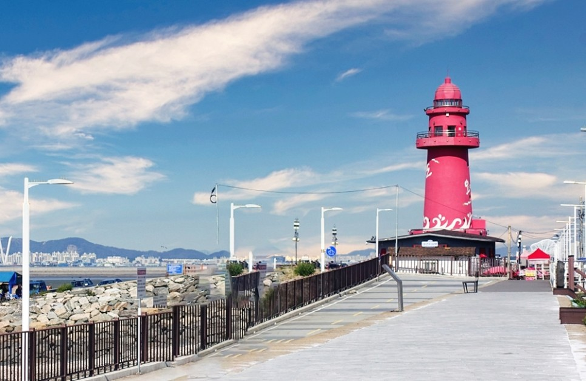
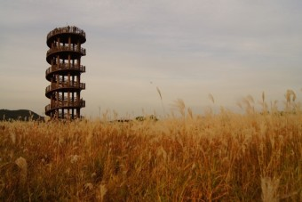
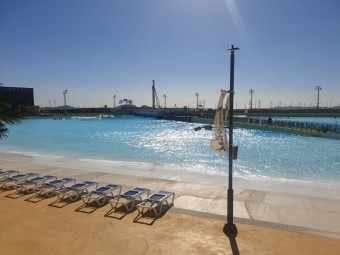

Welcome to
SIHEUNG
PLACE
INTRODUCE
오이도
갯골생태공원
거북섬
MENU 3
MENU 4
-PLACE-

오이도
경기 시흥시 정왕동 오이도

갯골생태공원
경기 시흥시 동서로 287

거북섬
경기 시흥시 정왕동 시화MTV거북섬
-INTRODUCE-
오이도
시흥시 오이도의 명물 빨간등대는 오이도가 2005년 정부의 ‘어촌체험 관광마을 조성사업’ 대상 지역으로 선정되면서 건립됐다.
오이도의 전통산업인 어업 외 수익을 도모하기 위한 목적으로 세워진 빨간등대는 오이도의 관광 산업을 책임지며 사람들의 발길을 이끌었다.
빨간 등대가 유명세를 탄 건 2006년 드라마 ‘여우야 뭐하니’에 등장하면서부터인데, 이후 빨간등대는 연인들의 데이트코스, 사진작가들의 출사지에 꼭 포함되는 명소로 각광받기 시작했다.
오이도 빨간등대에서는 간척으로 인해 급격하게 변화를 겪어 온 오이도의 흔적을 한 눈에 살펴볼 수 있다.
1층 전시관에서는 시흥의 문화·관광 역사 등 다양한 정보를 만나볼 수 있고, 전망대에서는 시화공단, 정왕동 신도시, 인천 송도신도시의 모습과 함께 유유히 흘러 쌓아 온 오이도의 기억과 세월의 흐름을 엿볼 수 있다.
갯골생태공원
이곳 소래염전 지역은 1934~1936년에 조성되었으며 갯골을 중심으로 145만평 정도가 펼쳐져 있습니다. 당시 이곳 소래염전에서 생산되는 대부분의 소금은 수인선과 경부선 열차로 부산항에 옮겨진 후, 일본으로 반출되었던 우리민족사의 아픔을 간직한 곳이기도 합니다.
시흥갯골생태공원은 경기도 유일의 내만 갯골과 옛 염전의 정취를 느낄 수 있는 아름다운 곳입니다.
칠면초, 나문재, 퉁퉁마디 등의 염생식물과 붉은발 농게, 방게 등 각종어류, 양서류가 서식하고 있어 자연 생태가 온전히 보존되어 있으며 시흥갯골은 2012년 2월 국가습지보호구역으로 지정되었습니다.
시에서는 이곳을 친환경적 개발로 국가적 명소화, 세계적 관광지화를 목표로 조성하였으며 매년 ‘시흥갯골축제’가 열리는 장소이기도 합니다.
갯골생태공원은 2018년에 열린관광지로 조성되었습니다.
거북섬
웨이브파크는 현대인에게 여유로운 휴가를 즐기며 특별한 데일리 스포츠를 즐길 수 있는 ‘건강한 라이프 스타일’의 새로운 문화코드를 제안합니다.
현대인이 보다 편리한 서핑 경험을 위해 초심자부터 프로 서퍼까지 즐길 수 있는 파도를 만들었습니다.
또한 프로서퍼와 함께하는 아카데미 커리큘럼으로, 안전하게 서핑을 즐기실 수 있습니다.
초보는 펀(fun)서핑으로 서핑에 입문을! 서퍼는 레벨업 클래스로 실력을 향상시켜, 서퍼들만의 SURFING LIFE STYLE 문화를 만끽하십시오!